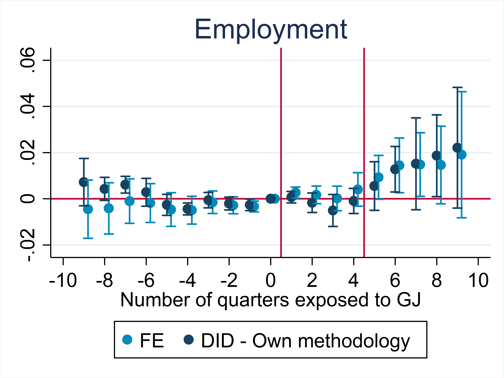

 The paper, titled "What Do NEETs Need? The Joint Effect of Active and Passive Labor Market Policies" first investigates the effect of combining intensive training, job immersions and counseling with a generous cash transfer. Ido so by evaluating a flagship French program, Garantie Jeunes, targeting disadvantaged youth Not in Employment, Education or Training. Using a new diff-in-diff estimator, I find that active labor market policies compensae for lock-in and for the negative effect of passive policies during the program, while a stong positive effect emerges after the end of the program.
 In this work, joint with Francesco Armillei (Bocconi University) and Thomas Fletcher (University of Edinburgh), I analyze the geographically heterogeneous impact of Covid-19. Exploiting a triple-differences methodology, we find that in Italy Covid-19 hit relatively harder in peripheral areas: the excess mortality in peripheral areas was almost double that of central ones in March 2020 (1.2 additional deaths every 1000 inhabitants).
We leverage the rich dataset of the Local Opportunities Lab to explore mechanisms behind this gradient.
In this work, joint with Francesco Armillei (Bocconi University) and Thomas Fletcher (University of Edinburgh), I analyze the geographically heterogeneous impact of Covid-19. Exploiting a triple-differences methodology, we find that in Italy Covid-19 hit relatively harder in peripheral areas: the excess mortality in peripheral areas was almost double that of central ones in March 2020 (1.2 additional deaths every 1000 inhabitants).
We leverage the rich dataset of the Local Opportunities Lab to explore mechanisms behind this gradient.